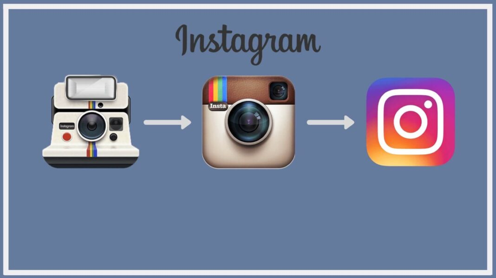

Instagram es una red social principalmente visual, donde un usuario puede publicar fotos y
videos de corta duración, aplicarles efectos y también interactuar con las publicaciones de
otras personas, a través de comentarios y me gusta.
¿Como nació Instagram?
La historia de Instagram es corta, pero muy exitosa y de rápido crecimiento. Fue lanzado en 2010
por el norteamericano Kevin Systrom y el brasileño Mike Krieger, ambos ingenieros de software.
El mismo día del lanzamiento, la aplicación se convirtió en la aplicación más descargada en Apple
Store y, en diciembre del mismo año, tenía 1 millón de usuarios. En 2011, la empresa, que contaba con solo 6 empleados,
ya tenía 10 millones de usuarios en la red. En 2012, tras el esperado lanzamiento de la aplicación en la versión de Android, Instagram fue
comprada por Facebook por 1.000 millones de dólares. Actualmente, la red social cuenta con más de 500 millones de usuarios en todo el mundo.

Más información sobre su origen
¿Para qué sirve Instagram?
Esta red social con más de 2.000 millones de usuarios activos sirve para compartir imágenes y vídeos,
aplicando filtros y consiguiendo de esta manera que una foto hecha con el móvil se convierta en una
imagen profesional. El procedimiento es muy sencillo. El usuario toma una foto o graba un vídeo desde
su móvil, le aplica un filtro o retoque fotográfico (luz, saturación, etc) y la comparte con su comunidad,
pudiendo elegir si lo hace temporalmente o fija en su muro. Actualmente, Instagram te ofrece varias secciones
que puedes exprimir: feed, reels, videos, guías y etiquetas o menciones. También cuentas con diferentes formatos:
solo imagen, video, reels, stories, carrusel…
Además, un usuario puede seguir a otro para poder acompañar sus publicaciones y sus
actividades dentro de la red. El número de seguidores, incluso, contribuye a la visibilidad del
perfil.
En ella también encontramos los famosos #hashtags, que sirven como buscadores de
publicaciones y, si tienes una página para tu marca, ayudan a la hora de segmentar tu
audiencia.